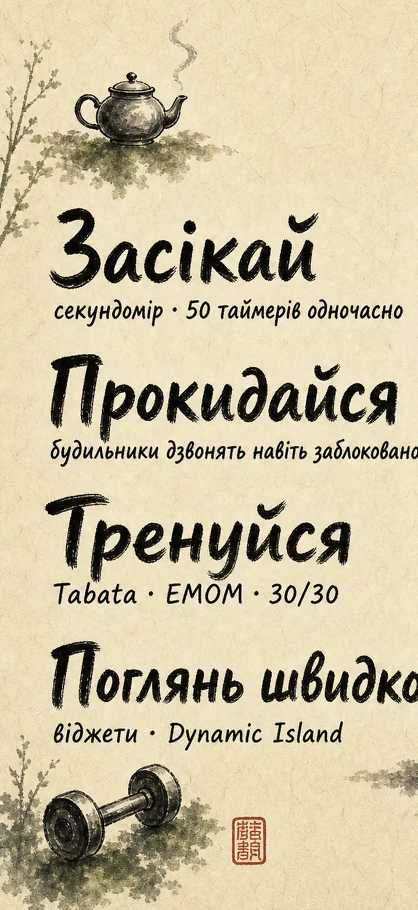
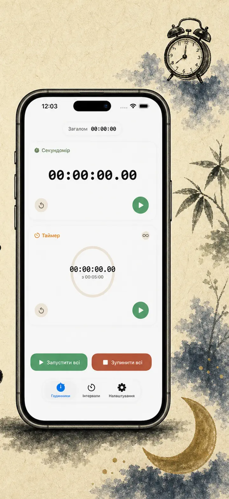
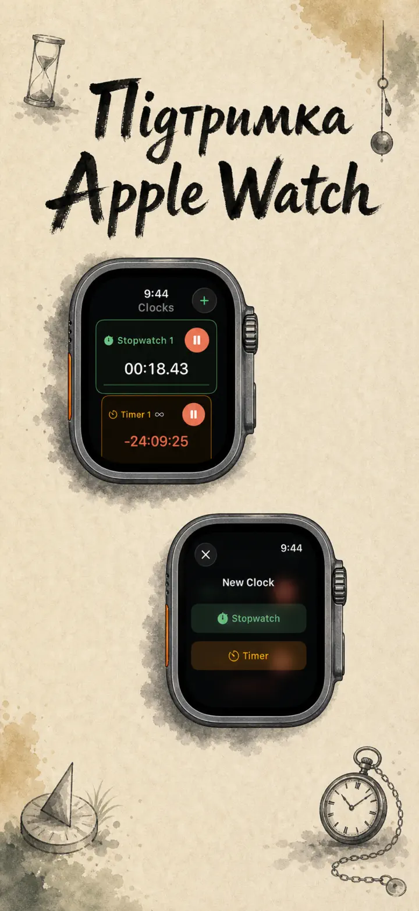
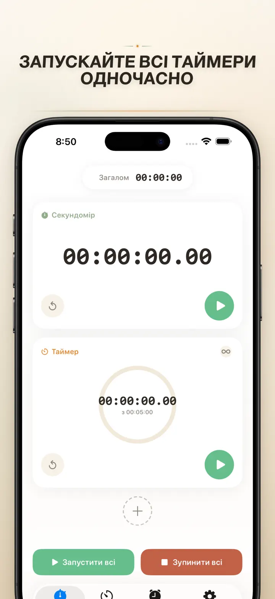
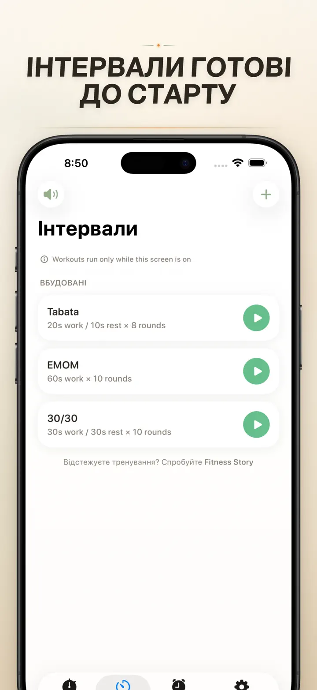
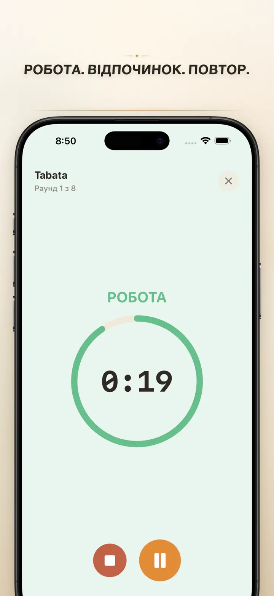
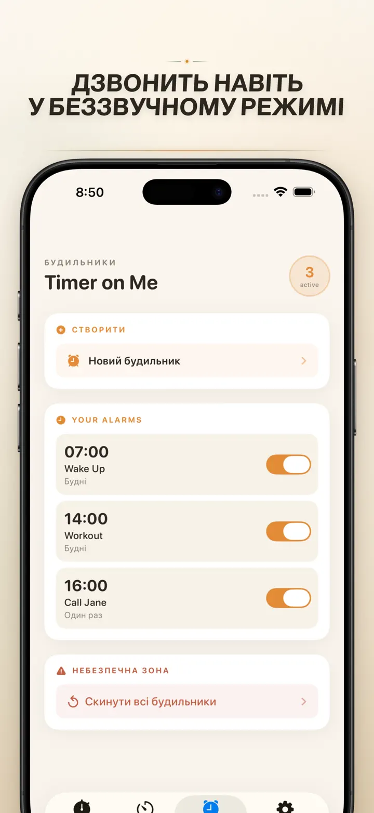

Timer on Me
Таймер, будильник, секундомір
Тепер із будильниками з датою: разовий будильник на будь-яку дату та час, плюс повторювані будильники, 50 таймерів, HIIT & Tabata та Apple Watch.
Завантажити з App Store
Про застосунок
Timer on Me — це мультитаймер і секундомір для iPhone, iPad та Apple Watch. До 50 незалежних таймерів одночасно, точні інтервальні тренування і будильники, які справді дзвонять — навіть із заблокованим iPhone чи закритим додатком.
БУДИЛЬНИКИ
- Пробудження та нагадування з власними назвами і розкладами по днях тижня
- На основі AlarmKit — дзвонять навіть коли iPhone заблоковано чи Timer on Me закрито
- Налаштовуваний дрімок (3 / 5 / 9 / 15 / 30 хвилин) або без дрімку
- Обери з вбудованих мелодій або імпортуй власні звуки
- Вмикай та вимикай одним дотиком в окремій вкладці «Будильники»
ТРЕНУВАННЯ Й ІНТЕРВАЛИ
- Готові пресети Tabata, EMOM і 30/30 — два дотики, і ти вже стартував
- Власний редактор інтервалів: робота, відпочинок і раунди у хвилинах і секундах
- Повноекранний режим тренування зі зміною кольорів за фазою та беззвучним варіантом
- Пауза, пропуск і продовження посеред сесії без втрати прогресу
APPLE WATCH
- Справжній нативний додаток watchOS, а не просто віддзеркалення телефона
- Кілька секундомірів і таймерів на зап'ясті одночасно
- Секундомір із точністю до сотих часток секунди
- Власні ускладнення циферблата для запуску одним дотиком
- Працює автономно, навіть якщо iPhone далеко
50 ТАЙМЕРІВ ВОДНОЧАС
- До 50 незалежних таймерів і секундомірів в одній сесії
- Запускай, зупиняй і обнуляй поодинці або групами
- Авто-повтор для циклічних раундів
- Таймери продовжують лік після нуля, щоб фіксувати понаднормовий час
- Кольорові смуги прогресу: жовта на 50 %, червона на 10 %
- Перетягуй для порядку, давай власні назви
НАДІЙНІ СПОВІЩЕННЯ
- AlarmKit: будильники дзвонять, навіть коли iPhone заблоковано чи додаток закрито
- Dynamic Island і Live Activity — прогрес на один погляд
- Віджети головного екрана: малий, середній, великий
- Вбудовані звуки: дзвіночки, спів пташок, старі телефони
- Торкнися, щоб послухати перед вибором
- Режим «Тримати екран увімкненим» для довгих сесій
ПЕРСОНАЛІЗАЦІЯ ТА ОБМІН
- Показуй або ховай десяткові, підсумки і відсотки
- Зберігай та перезаписуй пресети, повертай їх одним дотиком
- Експорт у CSV, JSON або простий текст
- Ділися з колегами, учнями або тренером
ДЛЯ iPhone, iPad І APPLE WATCH
- Розкладка адаптована до будь-якого розміру екрана
- Split View на iPad
- 34 мови
ІДЕАЛЬНО ДЛЯ
- HIIT, Tabata, CrossFit та кругових тренувань
- Раундів боксу, кікбоксингу і єдиноборств
- Pomodoro, підготовки до ЗНО та зосередження
- Заварювання кави, чаю, яєць, борщу, вареників і часу в духовці
- Йоги, пілатесу, медитації та дихальних практик
- Репетицій виступів і гри на інструменті
- Уроків, майстер-класів та групових активностей
- Настільних ігор і вечорів із друзями
Завантаж Timer on Me і візьми під контроль кожну хвилину — у спортзалі, на роботі чи вдома.
Політика конфіденційності: https://masawata.net/privacy-policy.html Умови використання: https://www.apple.com/legal/internet-services/itunes/dev/stdeula/
Знімки екрана






Timer on Me
Тепер із будильниками з датою: разовий будильник на будь-яку дату та час, плюс повторювані будильники, 50 таймерів, HIIT & Tabata та Apple Watch.
Завантажити з App Store